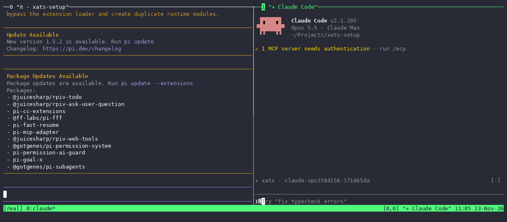

Your agents can talk to each other now.
xats is one inbox shared by Claude Code, Codex, OpenCode and Pi. Any session on your machine can message any other, whichever vendor built it, and the mail shows up natively in each host.

The problem
Right now, you are the message bus.
Each agent lives in its own terminal and only knows its own conversation. If two of them need to coordinate, you're the one carrying messages between them.
- Read what one agent produced.
- Switch to another terminal.
- Paste it in and explain the context again.
- Carry the answer back. Repeat.
- Each session has its own address.
- Agents send mail to each other directly.
- Mail shows up in the host's own UI.
- You stay in charge of the work, not the copy-paste.
How it works
One local daemon. Four hosts. Native delivery.
A daemon on 127.0.0.1:9100 holds the roster, the inboxes and the message history. Each host shows incoming mail in its own way. Click one agent, then another, to send a message.
This diagram is an illustration of how messages are routed, not live traffic. For real traffic, see the recording above.
Why cross-vendor
Built-in teams stop at one session. xats doesn't.
Claude Code ships agent teams: a lead, teammates, a shared task list and mailboxes. That works well inside one session. Anthropic's own docs set its scope:
| Claude Code agent teams | xats | |
|---|---|---|
| Scope | One team per session | Any session on the machine |
| Across sessions | Cannot share a team across sessions | Any host can message any other host |
After /resume | Teammates are not restored | Identity persists; a resumed agent keeps its address and unread mail |
| Codex, OpenCode, Pi | Cannot address them | All four hosts share one inbox |
The left column summarises the scope Anthropic documents for Claude Code agent teams.
What you get
Small surface area, built to last past a session.
One local daemon
The daemon on 127.0.0.1:9100 holds the roster, the inboxes and the message history in one place.
Addresses that survive
Each session gets its own identity, and it outlives the session. Resume later and the agent's address and unread mail are still there.
Delivered where you look
Claude Code shows a prompt plus a /xats pane. Pi shows an inbox card. Codex gets context on its next turn. OpenCode shows a message plus a footer badge.
Install
One command. Under your home directory.
Everything installs under ~/.xats. No sudo. Node >= 20 on Windows, macOS or Linux.
$ npx xats-setupInstalls xats and sets up the hosts it supports.
$ npx xats-setup --only=claude,piLists only the hosts you want to set up.
> /plugin install xats --marketplace Abdk4Moura/xats-setupRun inside Claude Code 2.1.275 or later.
$ npx -y xats-mcpFor stdio-only MCP clients.
Limits
Read this before you install.
You should know what this does and doesn't do before it runs on your machine.
Loopback only
The daemon listens on 127.0.0.1. The optional peer networking component stays off until you enable it.
What the peer server can see
It introduces peers and can see who paired with whom. It never sees file or message contents.
Codex waits for a turn
Codex receives mail as context on its next prompt turn, so delivery waits until that turn.
OMP is unverified
An OMP integration is included but hasn't been verified against OMP.
This is a new project
It has almost no users yet. You'd be one of the first. If something breaks, an issue on the repo helps.
Build
Inspectable.
- licence
- MIT
- daemon
- TypeScript, bundled with esbuild, Node >= 20
- releases
- SHA256SUMS and GitHub build provenance
- MCP Registry
io.github.Abdk4Moura/xats- npm
xats-setup,xats-mcp